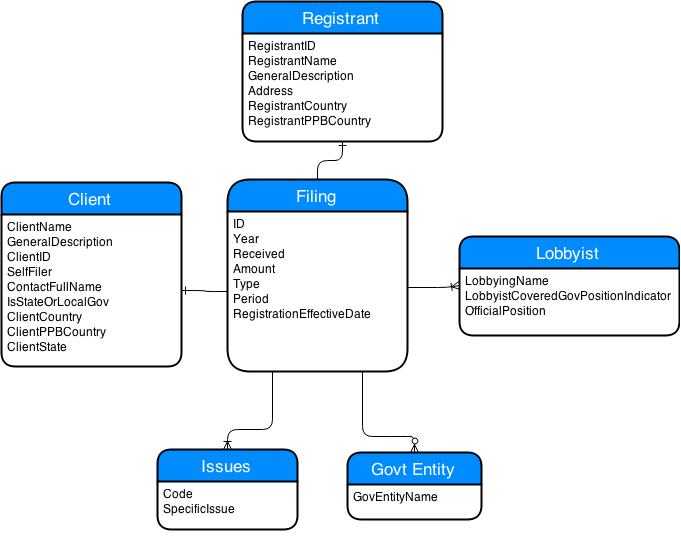
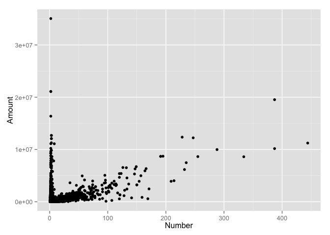
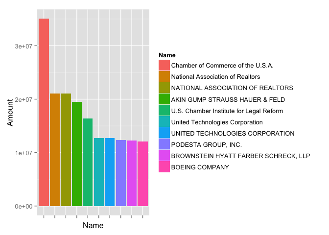
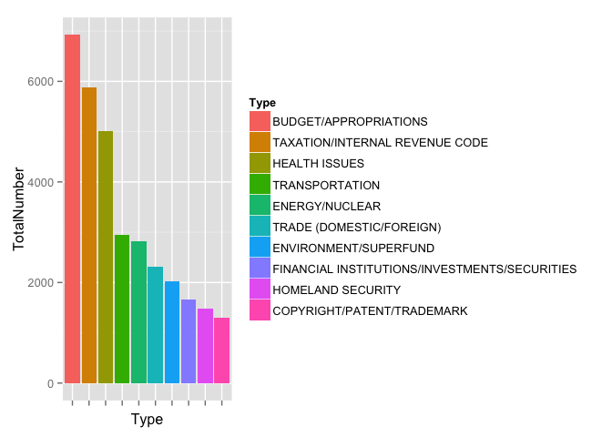

Lobbying Disclosures
Phillip Hetzel
April 24, 2015
Objective
I didn't think I was going to be able to do any work on quantifying lobbying data; however I was pleasantly surprised when I found out that lobbying entities had to disclose their activities to the public (here's the link to the data. I want to answer a couple of questions with this data:
- What entities lobby the hardest?
- What issues are lobbied the hardest
The Data
My initial discovery of the data was tempered when I viewed how it was stored: XML. Not only is the data in XML, but most of the data is stored in XML attributes. Rather than turn back, I decided to push forward with the hope that I'd be able to learn the XPath querying language to adequately parse the data in to a more manageable format. I've linked one particular website that helped me learn XML in R.
I've decided to take a relational database approach with the XML schema. Below, I've included the Entity Relationship Diagram (ERD) of what the database schema would look like for the XML files. In this analysis, we will not be including the Lobbying or Gov't Entity entities.

Set Up
I know I'm going to have to deal with an XML file, so I load the XML package in R. I also set my working directory and clear my memory.
require(XML)
require(dplyr)
require(ggplot2)
setwd("~/R Working Directory/Lobbying_Data/")
rm(list=ls())Getting the Data
In order to obtain the most recent data, I download the file directly from the source. I know it will come in a .zip file, so I unzip the file into my working directory and list all of the files into a vector to loop over. I also create blank data frames that I will place my parsed XML into.
#Download the file directly from the government, then unzip into a directory
download.file('http://soprweb.senate.gov/downloads/2015_1.zip', '2015_1.zip', method = 'curl')
download.file('http://soprweb.senate.gov/downloads/2015_2.zip', '2015_2.zip', method = 'curl')
unzip('2015_1.zip', exdir = '2015_1')
unzip('2015_2.zip', exdir = '2015_1')
#Place all items in this directory into a vector
files <- dir('2015_1')
#Create blank data frames to append to later
filing <- data.frame()
registrant <- data.frame()
client <- data.frame()
issues <- data.frame()Transforming the Data
The plan with parsing out the data falls in line with the ERD above. We will use XPath to navigate to the correct nodes and collect their attributes into columns. In order to write a minimal amount of code, we will loop through the files that we have downloaded and combined their data into filing, client, registrant, and issue data frames. The general process for each data frame will be:
- Use XPath to gather attributes
- Place XPath attributes into vectors
- Create a temporary data frame with the vectors
- Use
rbindto aggregate the temporary data frames
Filing
Below we are creating the filing data frame. The xpathSApply function calls are used to navigate to all nodes satisfying the query, while the xmlGetAttr is used to extract individual attributes from the XML nodes. In order to make relationships later on in our analysis, we take the RegistrantID and ClientID attributes and place them in the filing data frame.
for (file in files){
data <- xmlParse(paste('2015_1/',file,sep = ""), useInternalNodes = T)
#Filing Key data frame using the XPath language.
filingID <- xpathSApply(data, "/PublicFilings/Filing", xmlGetAttr, 'ID')
year <- xpathSApply(data, "/PublicFilings/Filing", xmlGetAttr, 'Year')
received <- xpathSApply(data, "/PublicFilings/Filing", xmlGetAttr, 'Received')
amount <- as.numeric(xpathSApply(data, "/PublicFilings/Filing", xmlGetAttr, 'Amount'))
reg <- xpathSApply(data, "/PublicFilings/Filing/Registrant", xmlGetAttr, 'RegistrantID')
clientID <- xpathSApply(data, '/PublicFilings/Filing/Client', xmlGetAttr, 'ClientID')
temp <- data.frame(FilingID = filingID, RegistrantID = reg, Date = received,
Year = year, Amount = amount, ClientID = clientID, stringsAsFactors = F)
filing <- rbind(filing, temp)Client
The client data frame has a one to one relationship with the filing data frame. One extra step we take towards the end of this code block is to only include unique clientIDs into the data frame.
#Client Key data frame
clientID <- xpathSApply(data, '/PublicFilings/Filing/Client', xmlGetAttr, 'ClientID')
clientName <- xpathSApply(data, '/PublicFilings/Filing/Client', xmlGetAttr, 'ClientName')
clientState <- xpathSApply(data, '/PublicFilings/Filing/Client', xmlGetAttr, 'ClientState')
clientCountry <- xpathSApply(data, '/PublicFilings/Filing/Client', xmlGetAttr, 'ClientCountry')
clientDesc <- xpathSApply(data, '/PublicFilings/Filing/Client', xmlGetAttr, 'GeneralDescription')
ctemp <- data.frame(clientID = clientID, Name = clientName, State = clientState,
Country = clientCountry, Description = clientDesc,
stringsAsFactors = F)
client <- rbind(client, ctemp)
cdups <- duplicated(client[,c('clientID', 'Name')])
client <- client[!cdups,]Registrant
The registrant data frame's process is identical to the client data frame's process.
#Registrant Key data frame
regNum <- xpathSApply(data, "/PublicFilings/Filing/Registrant", xmlGetAttr, 'RegistrantID')
regName <-xpathSApply(data, "/PublicFilings/Filing/Registrant", xmlGetAttr, 'RegistrantName')
regAd <-xpathSApply(data, "/PublicFilings/Filing/Registrant", xmlGetAttr, 'Address')
regDesc <-xpathSApply(data, "/PublicFilings/Filing/Registrant", xmlGetAttr, 'GeneralDescription')
rtemp <- data.frame(RegistrantID = regNum, Name = regName, Address = regAd,
Description = regDesc, stringsAsFactors = F)
registrant <- rbind(registrant, rtemp)
dups <- duplicated(registrant[,c('RegistrantID', 'Name')])
registrant <- registrant[!dups,]Issues
The issues data frame is much more complicated than the others, because of its one-to-many relationship with the filing data frame. To start, let's break down what the goal is: for every filingID, we want to gather the issues that are associated with it. So for every Filing node, I want to grab the ID attribute, then grab the Code and SpecificIssue attributes within the Issue child node. If there is not an issue associated with a filing, we can mark it as NA and filter it out later. xpathApply will return a list, therefore we can rap that function in dplyr's rbind_all function.
The code below was inspired by this Stack Overflow post.
#Issues Key data frame. Issues are one to many with FilingID
itemp <- rbind_all(xpathApply(data, "/PublicFilings/Filing", function(node) {
id <- xmlGetAttr(node, "ID")
xp <- ".//Issue"
issueCode <- xpathSApply(node, xp, xmlGetAttr, 'Code')
issueDesc <- xpathSApply(node, xp, xmlGetAttr, 'SpecificIssue')
if (length(issueCode)==0){
issueCode = NA
issueDesc = NA
}#if statement close
data.frame(FilingID=id, Type=issueCode, Description = issueDesc, stringsAsFactors = FALSE)})
)#rbind_all close
issues <- rbind(issues, itemp)
issues <- issues[!is.na(issues$Type),]
}Cleaning up
Congratulations! All of the hard work is finished. Now we can transform the data type of the Date column and delete some data from our memory.
filing$Date <- as.Date(filing$Date, format = "%Y-%m-%d")
#Delete everything except data frames from memory
remove(reg, ctemp, rtemp, temp, amount, data, file, files, filingID,
received, regAd, regName, regNum, year, clientCountry, clientDesc,
clientID, clientName, clientState, dups, cdups, regDesc, itemp)What entities lobby the most?
Let's take a quick look at what entities are the most active. To do this, we will prepare a new data frame, by_registrant that will show filing data grouped by RegistrantID and summarized by both dollar amount and number of filings.
#Create data frame that shows the amount spent by each registrant
by_registrant <- filing %>%
group_by(RegistrantID) %>%
summarise(Amount = sum(Amount,na.rm = T), Number = n()) %>%
filter(Amount > 0, Number > 0) %>%
left_join(registrant) %>%
arrange(desc(Amount))Next, let get to know this data a little bit better by making a scatter plot of the Amount spent and the Number of filings.
ggplot(by_registrant, aes(x = Number, y = Amount)) + geom_point()
This plot is interesting because it shows that the registrants that spend the most on lobbying usually only have one associated filing. Let's look at the top ten registrants in terms of Amount. The reorder function is used to create an order factor variable, based on another variable in the data frame.
by_registrant$Name <- reorder(by_registrant$Name, -by_registrant$Amount)
ggplot(by_registrant[1:10,], aes(x = Name, y = Amount)) +
geom_bar(stat='identity', data = by_registrant[1:10,], aes(fill = Name)) +
scale_x_discrete(labels=NULL)
Unsurprisingly, the U.S. Chamber of Commerce comes out on top by a hefty margin (they have led the pack in lobbying expenditures for the past decade).
What issues are lobbied the hardest?
In order to find the hardest lobbied issues, we'll create a new data frame called num_issues. We trim down the filing data frame by using the select function. We then shape the issues data frame using dplyr. Since we are aggregating at the issue level, we will group_by the Type variable.
select_filing <- select(filing, FilingID, Amount)
num_issues <- issues %>%
left_join(select_filing) %>%
group_by(Type) %>%
summarise(TotalNumber = n(), TotalDollars = sum(Amount, na.rm = T)) %>%
arrange(desc(TotalDollars))Now that we have a new data frame, we can make a bar plot of the top 10 lobbying issues.
num_issues$Type <- reorder(num_issues$Type, -num_issues$TotalNumber)
ggplot(num_issues[1:10,], aes(x = Type, y = TotalNumber)) +
geom_bar(stat='identity', data = num_issues[1:10,], aes(fill= Type)) +
scale_x_discrete(labels= NULL)
Budget/Appropriations issues come out on top! While this probably wasn't the sexy outcome we were hoping for, this graph helps to show the most lobbied issues in government.
Conclusion
There you have it! This was a quick look at some publicly available lobbying data. Eventually, I will be making a Shiny app that will allow for some user control of the data set. Thanks for reading!